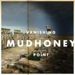
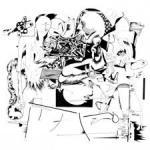

Music Reviews
-

No Joy Wait to Pleasure
No Joy adheres to a shoegaze template that sticks true to genre, so pure in its homage that it probably delves straight into rip-off territory. And that's okay.
Gabbie Nirenburg reviews... -

Tera Melos X'ed Out
Tera Melos realizes its pop rock potential with X’ed Out.
Sean Caldwell reviews... -
Depeche Mode Delta Machine
Depeche Mode's latest album shows the band stuck in a bit of a rut. While their songwriting prowess remains intact for the most part, the band is not exploring new sounds and instead are packing their record with too many incomplete ideas.
Joe Marvilli is all for quality over quantity... -
Phoenix Bankrupt!
The French foursome's latest hits you with a surfeit of sensations, fully taking advantage of our easily distracted selves by leveraging the power of instant gratification.
Juan Edgardo Rodríguez splashes some Drakkar Noir... -
Born Ruffians Birthmarks
The Canadian band's latest is full of heartbreak and lust and uncertainty, set to such catchy, uplifting melodies.
Gabbie Nirenburg reviews... -

Mudhoney Vanishing Point
Hooray! Put on a party hat and pop a party popper: Mudhoney are 25 this year! Here's the album to coincide with that momentous event.
James McKenna reviews... -

Adventure Weird Work
Adventure's third record sees an impregnable take on the video game soundtrack countering the needs of a record, but what does it all mean?
Matt Bevington reviews... -

Thee Oh Sees Floating Coffin
With their new album, Floating Coffin, Thee Oh Sees reuse and repurpose, but refuse to recycle. I rejoice.
Sean Caldwell reviews... -

Charli XCX True Romance
London-based electro-pop provocateuse releases debut album proper. I think we can be sure that Mr. and Mrs. XCX will be very proud.
Joe Rivers is all 'OMG' and 'WTF'... -

James Blake Overgrown
Don't worry: It's incredible.
Forrest Cardamenis marvels at...